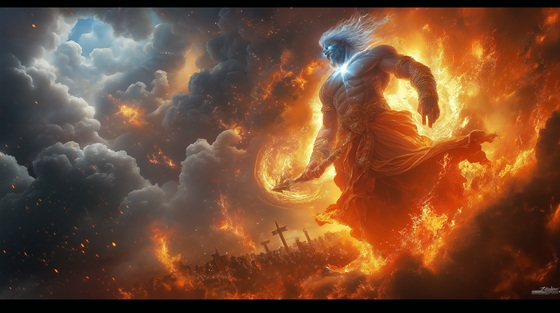

After his ascension, Shango becomes more than a memory — he becomes judgment itself. When called in ritual, he possesses his followers, delivers justice, and strikes liars, thieves, and oathbreakers with thunderbolts.
His wrath is not blind rage — it is righteous fury. He punishes the corrupt, protects the innocent, and destroys falsehood with fire. In many traditions, his arrival is felt as a storm without wind, a rumble beneath lies, and a judgment from beyond.
Shango does not forgive what is never confessed. He dances through storms, and with every strike, the truth is carved into the sky.
The Wrath of Shango
The sky cracked open like a shell,
And from the storm, he screamed like hell.
The drums were not for dance or cheer—
They called a god the world should fear.
He rides the bolt, he walks the blaze—
And none escape the Orisha's gaze.
The wrath of Shango shakes the earth,
He strikes down lies, he burns rebirth.
No mercy given, no plea is heard—
He judges kings with flame and word.
They built their thrones on broken truth,
They drank the blood of stolen youth.
They swore their oaths then cast them low—
And now the sky begins to glow.
His axe is fire, his heart is storm—
He comes to make the cursed conform.
The wrath of Shango shakes the earth,
He strikes down lies, he burns rebirth.
No mercy given, no plea is heard—
He judges kings with flame and word.
He dances now in sacred flame,
They speak no more who cursed his name.
No temple shields the guilty hand—
He finds the false in every land.
His thunder calls the truth to rise—
And silence falls where honor dies.
The wrath of Shango shakes the earth,
He strikes down lies, he burns rebirth.
No mercy given, no plea is heard—
He judges kings with flame and word.
Ashes to ashes, lies to flame,
The god of fire calls each name.
You called his rage, now face the sky—
And know the wrath you can't deny.